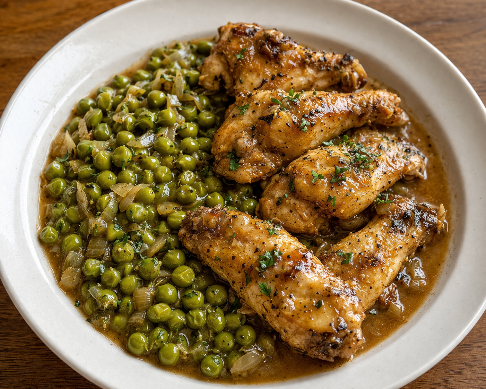
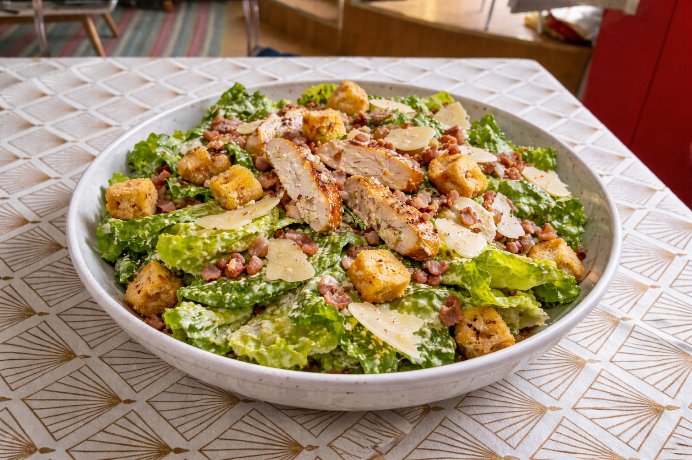

Cailles & Petits pois
Un classique de la gastronomie française, délicat et savoureux, parfait pour les repas de fête ou du dimanche.
Explorer la recette8 recettes • design premium • outils interactifs • ambiance maison
Chaque recette possède son propre univers : ingrédients ajustables, étapes détaillées, idées d’associations, checklist, minuteurs, galerie photo et assistant cuisine. Le tout dans une ambiance plus élégante, plus lisible et plus agréable à utiliser. Découvrez la spécialité maison, la boisson fraîche et les nouvelles recettes du restaurant.
Le restaurant d’Antoine rassemble des recettes gourmandes dans un site travaillé avec une interface plus claire, plus élégante et interactive. Tout est séparé proprement pour rendre le site agréable à utiliser et joli à regarder.

Un classique de la gastronomie française, délicat et savoureux, parfait pour les repas de fête ou du dimanche.
Explorer la recetteUne boisson fraîche, simple et naturelle, parfaite pour le petit-déjeuner ou une pause vitaminée.
Explorer la recette
Douces, moelleuses, avec un léger parfum de vanille ou de rhum, faciles à personnaliser à l’infini.
Explorer la recette
Chauds, généreux et très gourmands, avec un pain brioché moelleux et une viande fondante.
Explorer la recette
Au cœur coulant et intense, ce dessert fera chavirer tous les amateurs de chocolat.
Explorer la recette
Moelleux à souhait, ce grand classique est aussi superbe à la découpe qu’en bouche.
Explorer la recette
Frais, coloré, sain et équilibré. Une explosion de saveurs pour un repas léger et nutritif.
Explorer la recette
Une recette fraîche, légère et gourmande, parfaite pour un repas simple, équilibré et plein de goût.
Explorer la recette